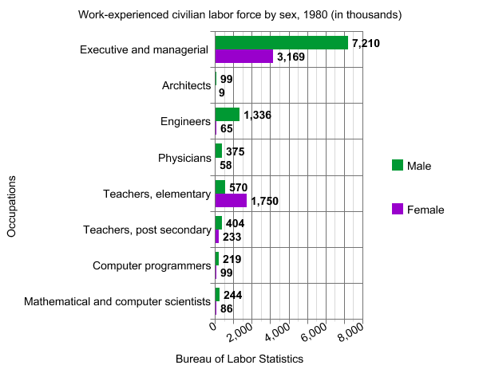

The Doll, the Career Woman
Barbie debuted in 1959 at New York's annual Toy Fair. Back then most dolls, like Betsy Wetsy and Chatty Cathy, resembled real babies and served the function of encouraging girls to "play mommy," Barbie stood apart as a doll with an adult-shaped body. Ruth Handler, who co-founded Mattel Toys with her husband, Elliott, said her inspiration came from observing her daughter Barbara playing with paper dolls.
Barbara and her friends were imagining their lives as adults. They were using the dolls to reflect the adult world around them. They would sit and carry on conversations, making the dolls real people.
In the 1960s, a woman was expected to marry in her early 20s, start a family quickly and devote her life to homemaking. Of the 38% women who worked, they were limited to jobs like pre-K teacher, nurse and secretary.
But not Barbie. Handler saw value in transforming a two-dimensional play experience into a three-dimensional one. Indeed, children learn through play and toys, as the tools of play, influence growth. First generation Barbie owner M.G. Lord, author of Forever Barbie, explains that to her, "Barbie was a revelation. She didn't teach us to nurture. Barbie was her own woman."
Barbie has the power to reinvent herself by changing her outfit.
Initially introduced as the "teenage fashion doll,"" Barbie was a registered nurse and flight attendant in 1961, an astronaut in 1965, a surgeon in 1973, a veterinarian in 1985 and a dentist in 1997.

According to the Bureau of Labor Statistics (BLS), in 1960 there were no women in the following professions: architect, dentist, aeronautical engineers, physicians and surgeons. In addition, there were no men in the following professions: secretary, stenographer, telephone operator and typist. At a time when women were underrepresented, especially in positions that were considered men's domain, Barbie encouraged girls to imagine themselves in occupations other than homemakers.
Let's take a look at these career Barbie in 2013.
With the exception of flight attendants and registered nurses, where there were less women, the rest saw growth.
| Occupation | Total employed | Women, # | Women, % |
|---|---|---|---|
| Flight attendants | 89 | 72 | 80.9% |
| Registered nurses | 2,894 | 2605 | 90.1% |
| Aerospace engineers | 144 | 48 | 12.2% |
| Physicians and surgeons | 934 | 331 | 35.5% |
| Veterinarians | 87 | 47 | 54.7% |
| Chief executives | 1,520 | 407 | 26.8% |
| Dentist | 183 | 56 | 30.8% |
| Software developers | 1,103 | 112 | 19.7% |
| Architect | 193 | 48 | 25% |
Data from the BLS, Current Population Survey (CPS) show decade after decade, the number of women in the labor force continues to grow. Women made up roughly 47%, 72.6 million, of the total labor force. The most significant increase was from 1970 to 1980. From 31.5 million in 1970 to 45.5 million in 1980, the number of working women grew by 44%. The uptick most likely resulted from the feminist movement
Women are still underrepresented in many traditionally male-dominated jobs. The top five leading occupations in 2013, as compiled by the Women's Bureau, are the following:


But can the unapologetically all-girl plastic doll, marketed to children between age three and nine, affect girls' ideas about their place in the world and limit their sense of what's possible?
"Children, ages four to eight, should play with open-ended and free of sexual stereotypes toys," states Diane Levin, a professor of education at Wheelock College where she teaches about children's play.
Barbie is most definitely not free of sexual stereotypes. With dresses and hot pink accessories, the cultural icon is synonymous with girl's toy. According to a study published in March in the journal Sex Roles, Aurora Sherman, an associate professor at Oregon Sate's department of psychology discovered girls who played with Mrs. Potato Head see themselves in more possible careers, nearly the same number of possible careers they see for boys, than girls who played with Barbie.
Immediate backlash followed, The Los Angeles Times declared, "Playing with Barbie limits career choices for girls, study says" and The Toronto Sun announced, "Barbie might be a dream killer, new study suggests.""
However, the problematic conclusion was not based on long-term controlled study. According to the press release from Oregon State University, 37 girls ages four to seven were randomly assigned to play with one of three dolls: a fashion Barbie, a doctor Barbie and a Mrs. Potato Head with purses and shoes. After five minutes, the girls were asked if they could do any of 10 jobs, consisting of five traditionally male-dominated and five female-dominated careers, when they grew up.
To conclude that girls should play with Mrs. Potato Head (a Mrs., not Ms.) than Barbie based on the five-minute experiment left much to be proved. Maureen Healy, a Psychology Today contributor and author specializing in highly sensitive children, says children adapt toys to fit their play, not the other way around.
What makes play "play"? Children naturally play because play is fun. Jean Piaget, a Swiss developmental psychologist, has grouped children's play into three categories: mastery (Rubik's cube), games with rules (checkers) and games of make-believe. Barbie belongs in the third category where to play symbolically children have to use their imaginations. Through the process, the plaything comes to represent something more, and often something different.
What if Barbie is more than just a pretty face? What if in some girl's play Barbie is a model who uses her wealth and fame to help children living in third world countries?
And while it cannot be denied many women have complex relationship with Barbie, a study published by the University of Virginia argued family, especially parents, have the most influence over children beginning to develop gender stereotypes and career goals. More than any toys on the market, parents (father second to mother in influence) can unintentionally pass gender stereotypes and influence their children's belief about their abilities.